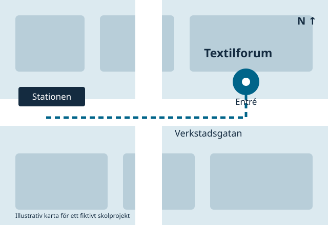

API:er som är lätta att leva med
Lina Fors · API-arkitekt
Om tydliga kontrakt, versionshantering och idempotens. Så gör du nästa integration enklare att förstå och underhålla.
Backend · systemdesign · människor
En dag för dig som bygger det användaren inte ser, men alltid märker. Från begripliga API:er till system som håller när verkligheten knackar på.
Bra system börjar med bra samtal. Vi tar dem här.
Dagens flöde
Fem perspektiv på mjukvara som ska fungera även efter första demon. Dörrarna öppnar 08.30.
Lina Fors · API-arkitekt
Om tydliga kontrakt, versionshantering och idempotens. Så gör du nästa integration enklare att förstå och underhålla.
Amir Lund · Databasutvecklare
Index, datamodeller och säkra migreringar. Vi följer en långsam fråga hela vägen till en begriplig lösning.
Sara Eng · Säkerhetsingenjör
Behörigheter, validering och felhantering med konkreta exempel. Små beslut som gör stor skillnad för ett systems motståndskraft.
Joel Berg · Plattformstekniker
Tester, leveransflöden och observerbarhet. Hur märker vi att något fungerar, och hur återhämtar vi oss när det inte gör det?
Nima Dahl · Mjukvaruingenjör
Bygg AI-funktioner med tydliga gränser, granskningsbara resultat och fungerande reservvägar när modellen inte räcker till.
Människorna bakom systemen
För musen över ett kort eller tabba till dess länk för att läsa mer om talaren.
API-arkitekt · Kontrakt & integration
Gör komplexa integrationer lättare att resonera om. Hennes favoritfråga är: vad lovar vårt API egentligen?
Databasutvecklare · Modellering & SQL
Arbetar med modeller som går att förändra. Han visar hur en genomtänkt fråga kan vara bättre än ännu en cache.
Säkerhetsingenjör · Tillit & behörighet
Översätter hotbilder till praktiska utvecklingsbeslut. Säkerhet ska vara ett gemensamt språk i hela teamet.
Plattformstekniker · Leverans & drift
Bygger leveransflöden som hjälper människor att fatta bra beslut. Föredrar tydliga larm framför fler larm.
Mjukvaruingenjör · AI & systemgränser
Utforskar hur AI kan vara en del av ett begripligt flöde. Är lika intresserad av reservvägen som av modellen.
Hitta din plats
Fiktiva priser inklusive moms. Lunch serveras 12.00–13.00 och dagen avslutas 16.00.
350 kr
För dig som är på väg in i yrket.
950 kr
För dig som bygger system i vardagen.
2 200 kr
Tre platser för en gemensam diskussion.
Bra att veta innan du kommer
